Live copy word for word, one design system, glass 3D objects over the light curtain. Every page below is built from the same shared parts and modules.
Hover a page to see a second section. Each opens the full page.
The library loads the same files the pages load, so everything in it is the real thing.
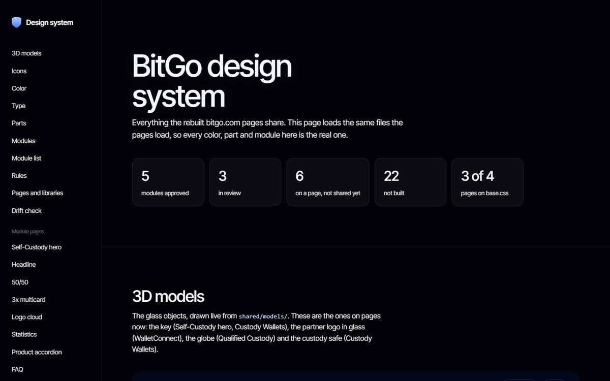
Colours, type, parts, rules, every module
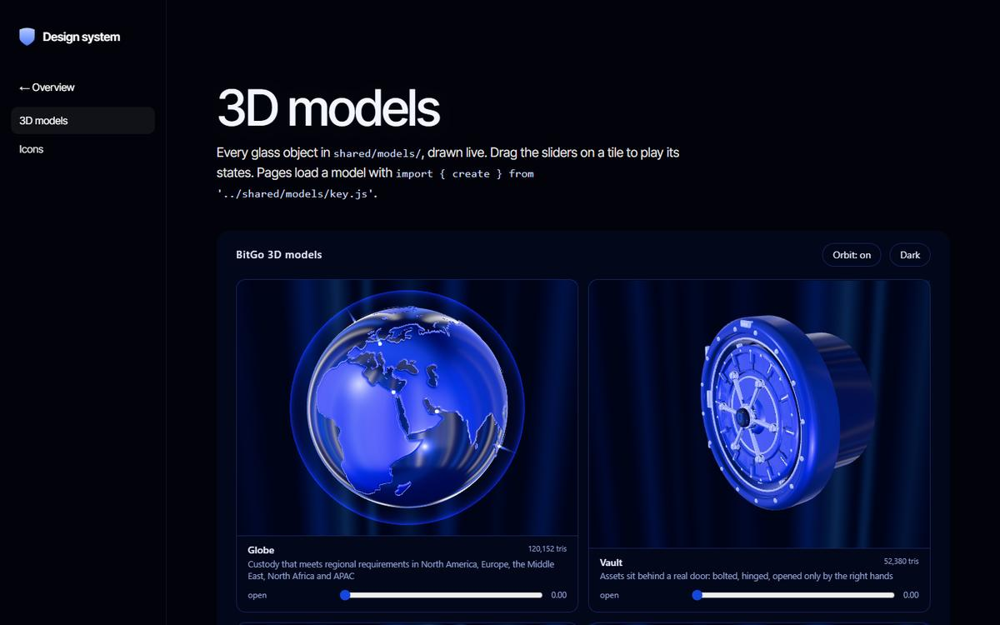
27 glass objects, drawn live
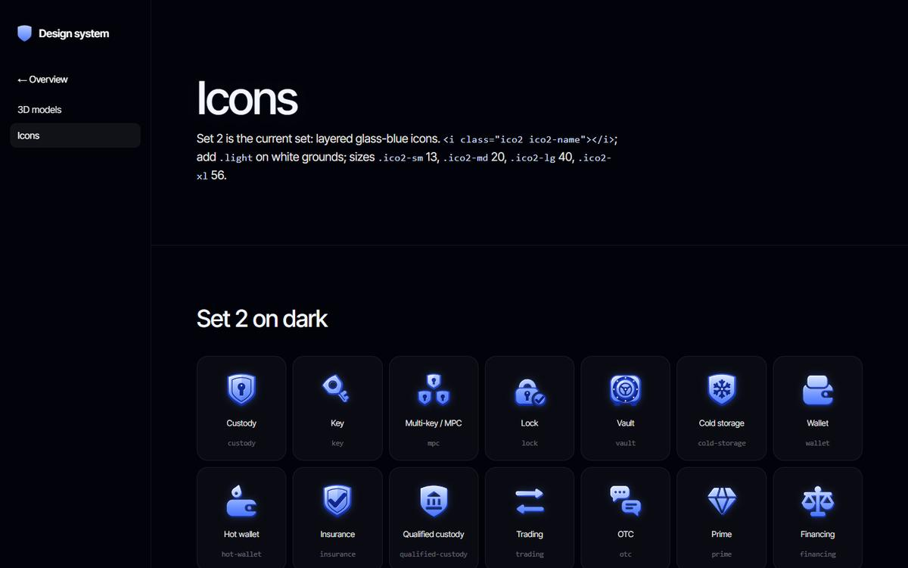
48 layered glass-blue icons, dark and light
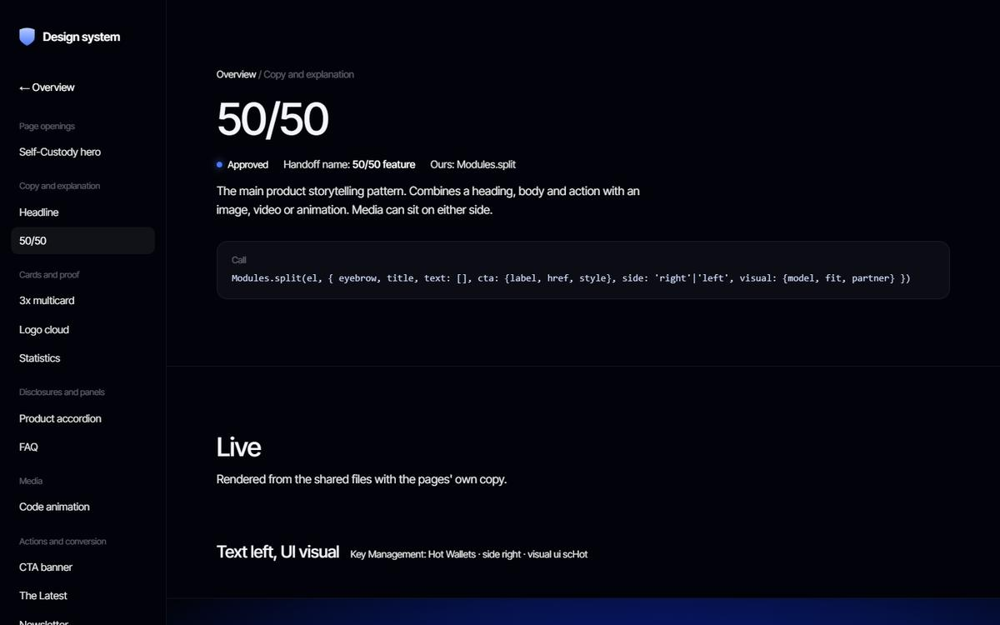
One page per module: live, usage, rules
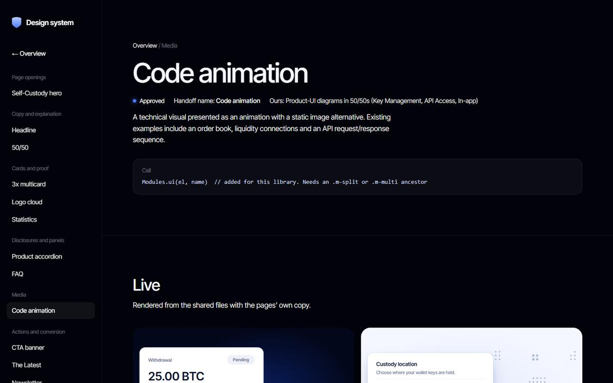
The Stripe-style animated cards
Feedback: the blue is too vibrant and shiny. Each version changes the curtain on every page. Left: hero. Right: below the hero.
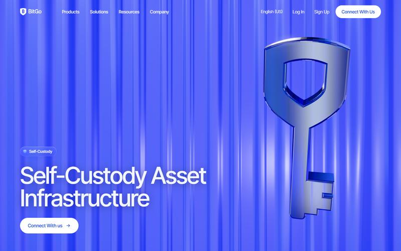
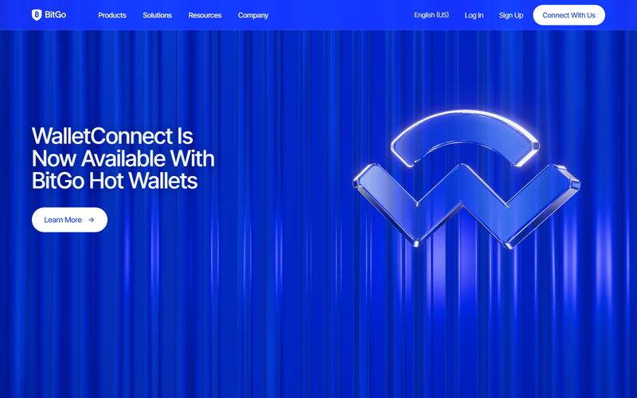
As built: vivid blue, sharp streaks
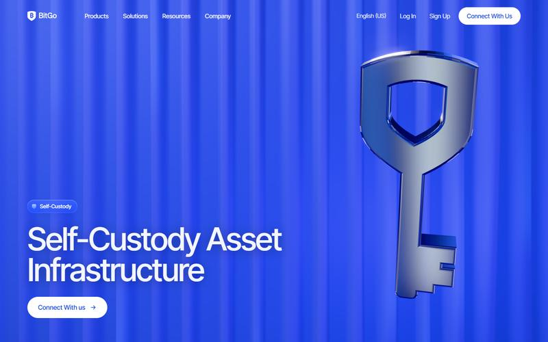
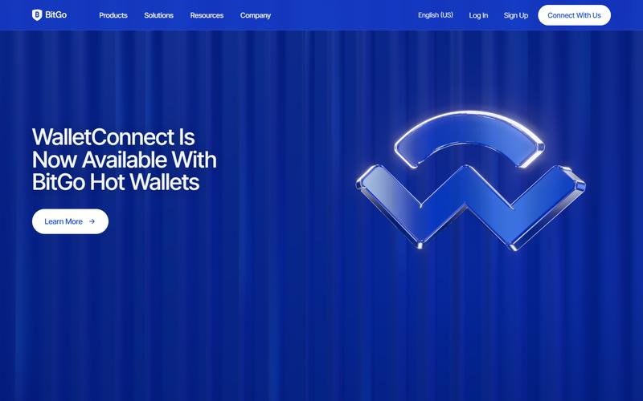
Muted blue, softer streaks
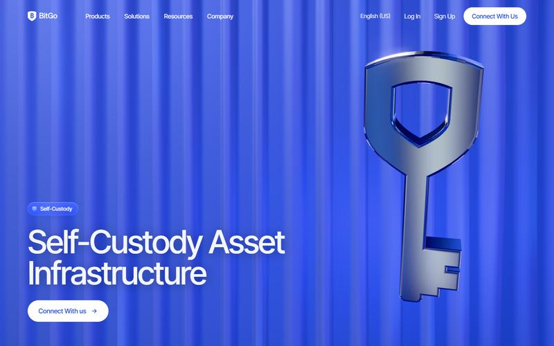
Greyer blue
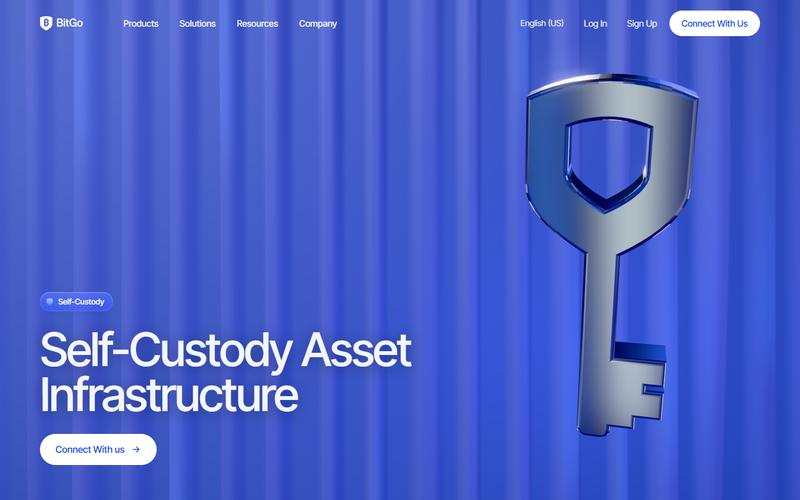
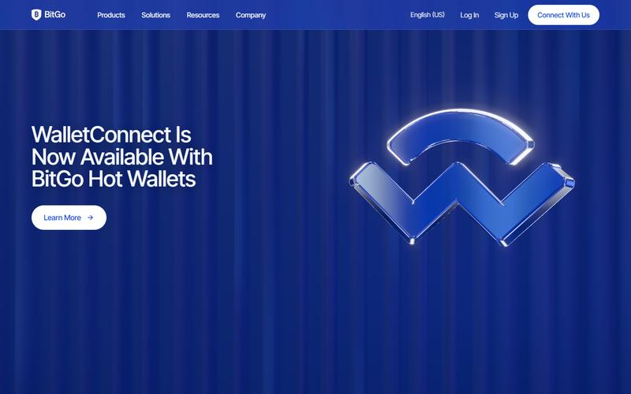
Greyest, softest streaks
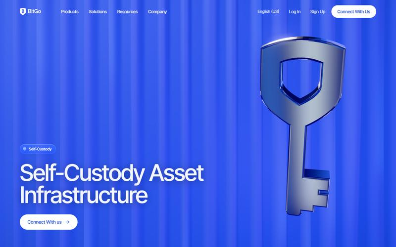
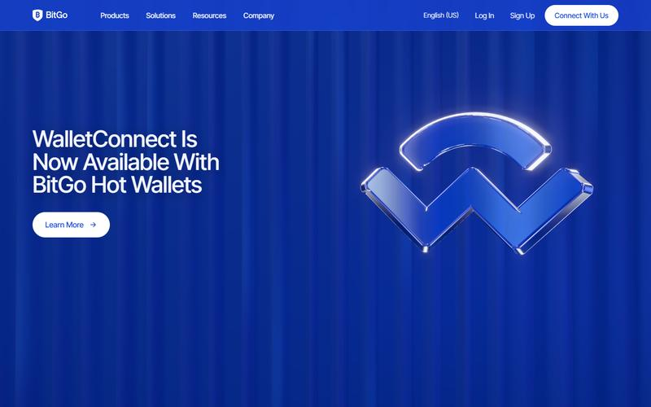
Closer to BitGo blue
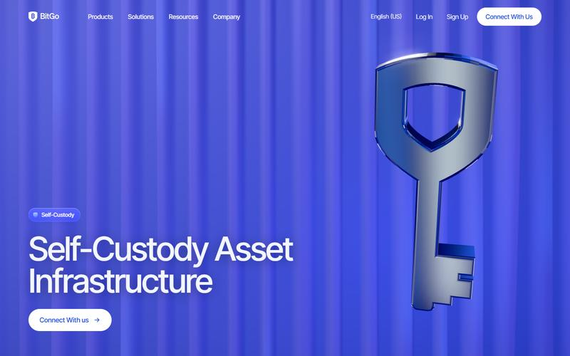
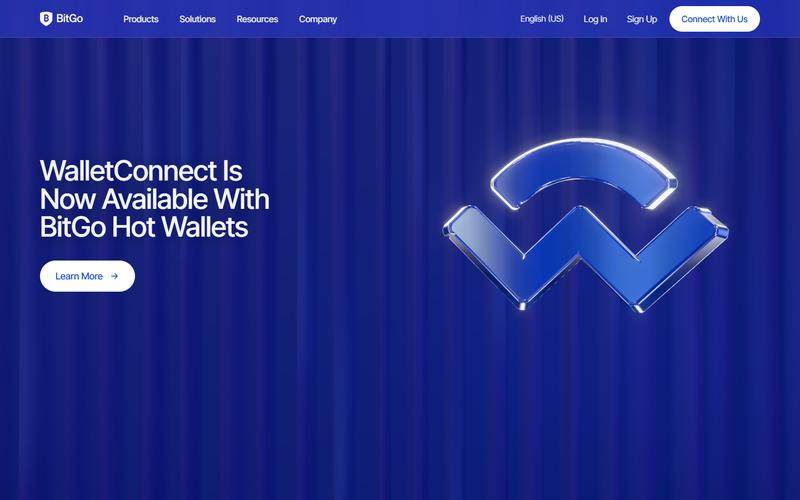
Toward violet
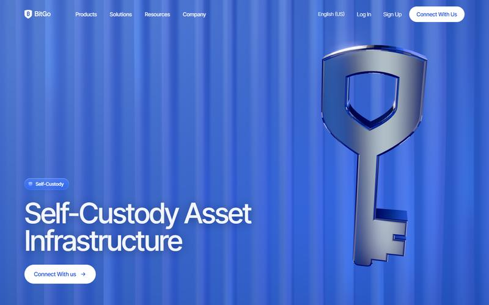
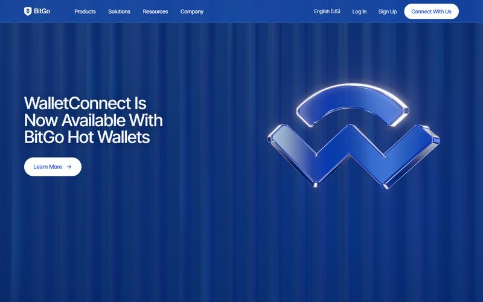
Cooler, a touch of cyan
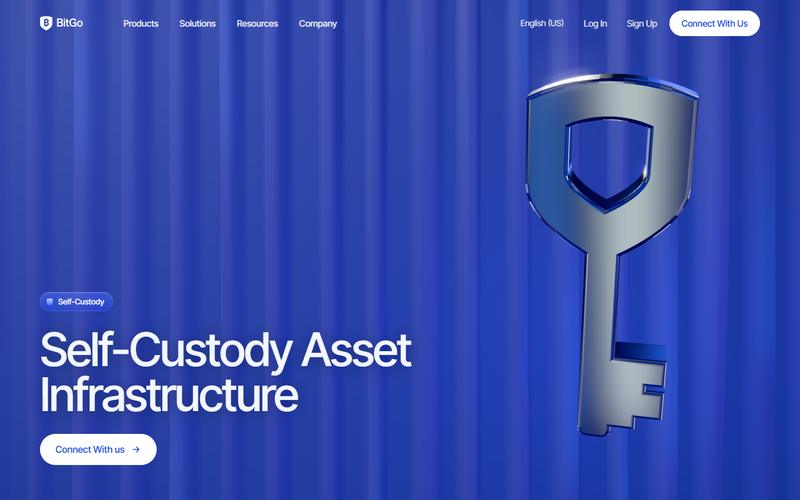
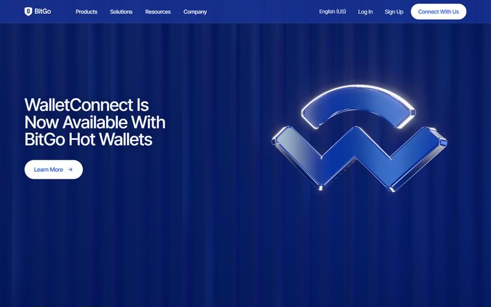
Deeper and darker
Shown on Self-Custody. Add the same ending (for example ?calm=3&hue=steel) to any page URL.
Every style tried, grouped by family, each in build order: v1, v1 + fixes, v1 again, v2, v3. Refokus v3 became the rebuild.